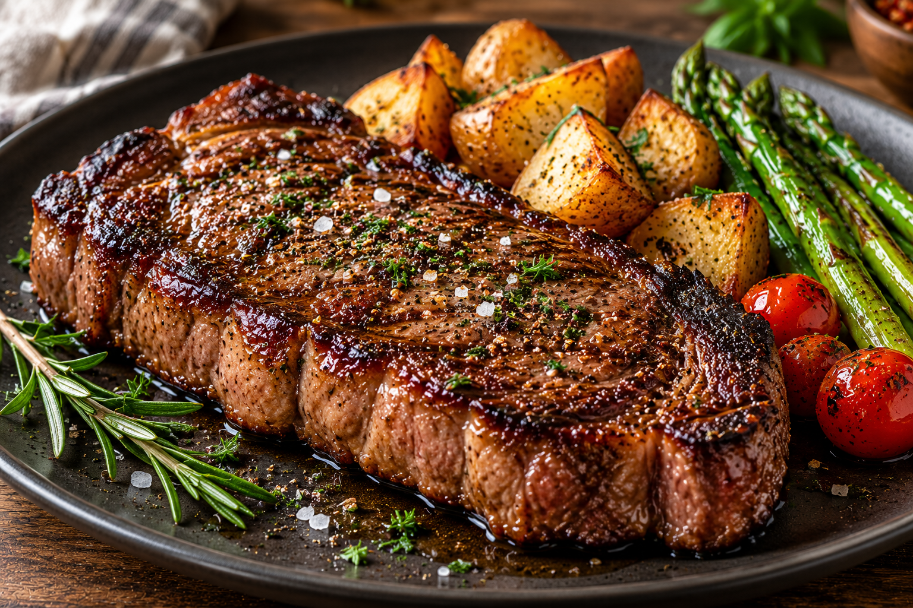

Steak

Improve Your Dinner
Steak is a delicious and juicy meat dish that is full of flavor.
It is seasoned with salt and pepper and cooked until perfectly tender.
Steak is a great choice for a special dinner and can be served
with potatoes or vegetables.
Ingredients
- 1 ribeye steak
- 2 tablespoons olive oil
- 1 teaspoon salt
- 1 teaspoon black pepper
- 2 cloves garlic
- 2 spring fresh rosemary
- 1 teaspoon paprika
Steps
- Remove the steak from the refrigerator about 30 minutes before cooking.
- Pat the steak dry with paper towels.
- Season both sides of the steak with salt, black pepper, and paprika.
- Heat the olive oil in a large skillet over medium-high heat.
- Place the steak in the hot skillet and cook for 3–5 minutes on each side, depending on its thickness.
- Add the garlic and fresh rosemary to the skillet.
- Spoon the hot oil over the steak to add flavor.
- Check the internal temperature with a meat thermometer to reach your preferred doneness.
- Remove the steak from the skillet and let it rest for 5–10 minutes.
- Slice the steak against the grain.
- Serve the steak hot with your favorite side dishes.